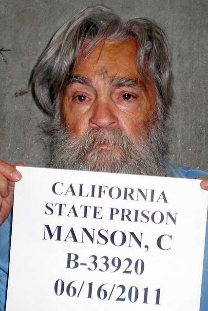

Profile Selection
Ted Bundy
 Ted Bundy, The Campus Killer
Ted Bundy, The Campus Killer
Theodore Robert Bundy was a convicted American serial killer who kidnapped, sexually assaulted and murdered young women and girls. During a 4 year period in the early 1970's he supposedly murdered over 20 women. Ted Bundy was unlike any other serial killer ever seen because he didn't fit the characteristics of any other serial killer seen before. He was cunning, manipulative and extremely charismatic. His persuasive skills allowed him to socially engineer others into situations where he would prevail, for example, Bundy escaped his trial by convincing the judge to use the 2nd floor library's phone and jumping off the 2nd floor and fleeing. His manipulation allowed him to remain unshackled which allowed his escape to occur. His intelligence is also not to be underestimated. Ted Bundy discovered an opening in the ceiling of his cell and lost a significant amount of weight to be able to climb through this opening and escape prison. He then went on to murder 3 more people and critically injure 3 other college students before being aprehended for good. In January 24, 2019, Ted Bundy was strapped to an electric chair and executed for his crimes. Read More...
Richard Ramirez
Richard Ramirez, The Night Stalker
Ricardo Leyva Muñoz Ramirez was a convicter serial killer, rapist and burglar. During 1984-1985, Richard Ramirez murdered over 13 people across California and was known for his tendency to break into houses in the Los Angeles area to terrorize his victims before sexually assaulting them. He was tracked down due to a shoe print left in the scene of multiple crimes. This shoe print was a size 12 which meant the culprit was above average height. A fingerprint in one of the crime scenes also helped connect Richard Ramirez to the crimes. Richard Ramirez was finally caught in the neighborhood he was raised in after multiple members of the neighborhood identified and neutralized him before notifying the police. The trials for his crimes were incredibly eccentric, in one of the trials, Richard Ramirez carved a pentagram into his hand and yelled "Hail Satan" to the jury before being escorted out of the premises. Finally, charged with 13 murders, 5 charges of attempted murder, 11 charges of sexual assault and 14 charges of burglary. He was sentenced to 19 death sentences. Before being executed he passed away due to B-Cell Lymphoma on June 7, 2013. Although he is long gone, the macabre tales of his crimes are still well documented and discussed in modern society. Read More...
Charles Manson

Charles Manson
Charles Manson was a notorious musician turned cult leader who orchestrated a series of gruesome murders in Los Angeles in 1969. He orchestrated the murder of 7 people including famous Hollywood celebrity Sharon Tate. Charles Manson ordered his cult to commit unspeakable crimes all while attempting to start "Helter Skelter", an apocalyptic race war that he wanted to directly trigger into existence. His insanity during the trials is often believed to be him attempting to avoid the death penalty by faking insanity, however even with all his attempts he was still sentences to death. However, by the time he was set to be executed, California had abolished the death penalty, which means his sentence was changed to life in prison. He went on to be interviewed multiple times during his life until he died from Colon Cancer in November 19, 2017. Many believe that although he did not directly murder anyone (as far as the public knows) he is still an embodiment of absolute evil due to the murderers he inspired to kill for him. His racist beliefs made him a symbol to white supremacists living in America and to this day many claim loyalty to him despite his death.Read More...